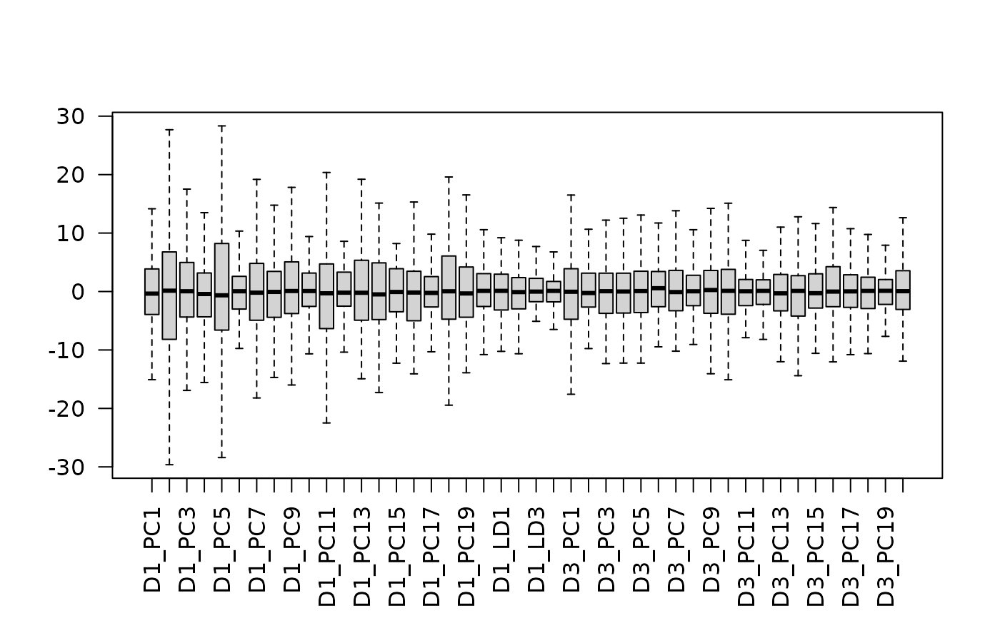
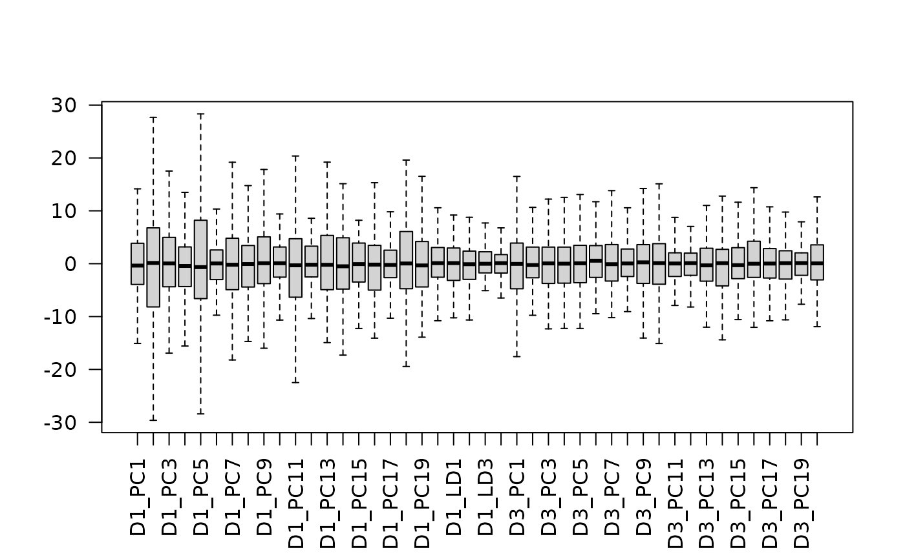

Re-weights embedding according to given weights for each reference dataset. This gives more or less weighting to each contributing dataset and method (PCA or LDA),
Arguments
- embedding
Joint embedding as output from stabMap.
- weights
(optional) named numeric vector giving relative weights for each reference dataset.
- factor
numeric multiplicative value to offset near-zero values.
Examples
set.seed(2021)
assay_list <- mockMosaicData()
lapply(assay_list, dim)
#> $D1
#> [1] 150 50
#>
#> $D2
#> [1] 150 50
#>
#> $D3
#> [1] 150 50
#>
# specify which datasets to use as reference coordinates
reference_list <- c("D1", "D3")
# specify some sample labels to distinguish using linear discriminant
# analysis (LDA)
labels_list <- list(
D1 = rep(letters[1:5], length.out = ncol(assay_list[["D1"]]))
)
# stabMap
out <- stabMap(assay_list,
reference_list = reference_list,
labels_list = labels_list,
ncomponentsReference = 20,
ncomponentsSubset = 20
)
#> treating "D1" as reference
#> generating embedding for path with reference "D1": "D1"
#> generating embedding for path with reference "D1": "D2" -> "D1"
#> generating embedding for path with reference "D1": "D3" -> "D2" -> "D1"
#> labels provided for "D1", adding LD components
#> generating embedding for path with reference "D1": "D1"
#> generating embedding for path with reference "D1": "D2" -> "D1"
#> generating embedding for path with reference "D1": "D3" -> "D2" -> "D1"
#> treating "D3" as reference
#> generating embedding for path with reference "D3": "D3"
#> generating embedding for path with reference "D3": "D2" -> "D3"
#> generating embedding for path with reference "D3": "D1" -> "D2" -> "D3"
 # look at the scale of each component and discriminant
boxplot(out, las = 2, outline = FALSE)

# re-weight embedding for less contribution from LDs and equal contribution
# from PCs of both references
out_reweighted <- reWeightEmbedding(
out,
weights = c("D1_LD" = 0.5, "D1_PC" = 1, "D3_PC" = 1)
)
#> reweighting for references: D1_LDD1_PCD3_PC
# look at the new scale of each component and discriminant
boxplot(out_reweighted, las = 2, outline = FALSE)
# look at the scale of each component and discriminant
boxplot(out, las = 2, outline = FALSE)

# re-weight embedding for less contribution from LDs and equal contribution
# from PCs of both references
out_reweighted <- reWeightEmbedding(
out,
weights = c("D1_LD" = 0.5, "D1_PC" = 1, "D3_PC" = 1)
)
#> reweighting for references: D1_LDD1_PCD3_PC
# look at the new scale of each component and discriminant
boxplot(out_reweighted, las = 2, outline = FALSE)